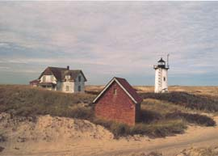

Provincetown
|
Provincetown
commercial and night life provide much entertainment. But
the isolated dunes, windswept beaches and natural harbors
are just as fascinating to explore. The National Seashore
has custody of the land outside town, known as the Province
Lands.
See the Provincetown
overview and Chamber
of Commerce sites, and check out Provincetown
restaurants
|

Race Point in the Province Lands
|
 National
Seashore Provincelands Visitor Center National
Seashore Provincelands Visitor Center
The Cape Cod National Seashore Visitor Center at the Province Lands
is about a mile from Provincetown. Set on a sand dune, it offers
great views from its 360 degree observation tower. The National
Seashore sponsors many tours and programs at the Visitor Center
and elsewhere. The Visitor Center is 1.6 miles from Rte 6 on Race
Point Rd. See the Tours page for
additional information, or go directly to the National
Seashore web site.
 Beech
Forest Trail Beech
Forest Trail
On the way to the Visitor Center, just one-half mile
from Rte 6, is the Beech Forest trail. The National
Seashore web site and the Short
Nature Walks book describe the trail. The one-mile trail
goes around Beech Forest Pond and into the heart of the forest.
 Province
Lands Bicycle Trails Province
Lands Bicycle Trails
The bicycle trails at the Province Lands Visitor
Center take you through a wonderful variety of landscapes. Trails
criss-cross the sand dunes, duck into the Beech Forest, and skirt
the beaches. Way out in the dunes you view the expanse of sand as
you zoom up and down the hills. The round trip is seven miles if
you follow all the trails to Herring Cove Beach, Race Point Beach
and Bennet Pond. The National Seashore
web site and the Short Bicycle
Rides book describe the trail.
Dune
Walks or Art's Dune Tours
For those who want to experience the sand dunes directly,
the National Seashore offers guided
walks. Their "Art in the Dunes" hike takes you on a 3-hour,
4-mile walk to meet an artist-in-residence and experience the quality
of light, natural environment, and isolation that attract artists
and writers. A 1-hour, 1-mile walk explores the dunes below the
Visitor Center. In Truro, The National Seashore leads a 2-mile hike
into the unusual parabolic dunes at Pilgrim Lake.
For the most comfort, call Art's Dune Tours at 487-1950
or 1050. Art takes you out cruising the dunes in a sturdy 4-wheel
drive vehicle, and he makes a stop to meet the resident of a dune
shack too. The tour begins where Art parks his vehicles at Standish
and Commercial St.
 Hatches
Harbor Exploration Hatches
Harbor Exploration
The National Seashore
offers a 3-hour exploration of Hatches Harbor, with a guide explaining
the ecology of salt marshes and projects to restore the marshes.
The walk provides beautiful views of the Race Point Light.
 Herring
Cove Beach Campfire Herring
Cove Beach Campfire
The National Seashore
offers an evening of stories around the campfire at Herring
Cove Beach on Province Lands Rd.
Old
Harbor Life-Saving Station at Race Point
Continuing past the Province Lands Visitor Center
on Race Point Road takes you to Race Point Beach. Here the Old Harbor
Live-Saving Station reenacts a 1902 rescue drill once a week, complete
with surfmen, firing of the Lyle gun, and use of the breeches buoy.
They also have open house for a couple of hours most afternoons.
Check for schedule with National Seashore.
The Visitor Center also shows an excellent film on Cape Cod shipwrecks
and lifesaving history.
Dike
to Long Point
At the end of Commercial Street, a dike built of
stone and just wide enough for walking crosses the water to Long
Point. It's a long walk, and this one really requires sturdy shoes,
but it's kind of fun to cross it just because it's there. If you
keep going on the other side you get to an isolated beach.
Pilgrim
Monument and Tour of Provincetown
At the top of High Pole Hill Rd, climb to the top
of Pilgrim Monument for a great view, and visit the museum. The
Pilgrim Monument and Museum teams with the National Seashore to
offer a 2-hour, 3-mile walking tour of the history of Provincetown.
Call the museum (487-1310) for schedule and reservations
|